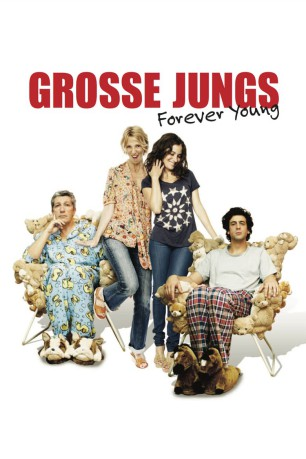

#11659 Grosse Jungs - Forever Young
 
 IMDB-Wertung: 6.2 / 10
IMDB-Wertung: 6.2 / 10  Metascore: 0
Metascore: 0 
Als der etwas durchgeknallte Möchtegern-Musiker Thomas seine Freundin Lola mit einem Verlobungsring überrascht, sagt sie sofort ja. Doch als sie ihn ihren Eltern vorstellt, nehmen die Dinge einen anderen Lauf, als sie gedacht hatte. Thomas' zukünftiger Schwiegervater Gilbert, der eine gefühlte Ewigkeit verheiratet ist, verbringt die Tage neuerdings gefrustet auf dem Sofa. Er hat seine Firma verkauft, aber was seine Situation noch schlimmer macht, ist für ihn ganz klar: seine Ehe. Anstatt sich über seinen neuen Schwiegersohn zu freuen, warnt er Thomas vorm Heiraten, dem größten Fehler, den ein Mann machen kann! Thomas lässt sich von Gilberts schlechter Laune aber nicht abschrecken, und schon der erste Ausflug zu zweit weckt den großen Jungen in Gilbert. Von da an lässt er keine Gelegenheit aus, Thomas dazu zu bringen, nicht an die bevorstehende Hochzeit zu denken, sondern lieber mit ihm die Sau raus zu lassen.
Jahr: 2013
Dauer: 97 Minuten
FSK: 6
Land: Frankreich Studio: NFP Marketing & DistributionTonspuren:
Untertitel: Französisch,
Auflösung: SD (720x306) Größe: 763 MB
Genre: Komödie
Regisseur: Anthony Marciano
Drehbuch: Anthony Marciano, Max Boublil, Noé Debré, Mona Achache
Soundtrack: Anthony Marciano
Darsteller:
 Alain Chabat als Gilbert
Alain Chabat als Gilbert- Max Boublil als Thomas Brenner
 Sandrine Kiberlain als Suzanne
Sandrine Kiberlain als Suzanne Mélanie Bernier als Lola
Mélanie Bernier als Lola- Arié Elmaleh als Carl
- Elisa Sednaoui als Irène
- Alban Lenoir als Romain
- Nicolas Briançon als Bruno
- Mélusine Mayance als Mimi Zozo
 Iggy Pop als Himself
Iggy Pop als Himself Patrick Bruel als Le sosie de Patrick Bruel
Patrick Bruel als Le sosie de Patrick Bruel- Darius Kehtari als Le traducteur
 Jean-Philippe Puymartin als Patron Lola
Jean-Philippe Puymartin als Patron Lola- Thomas Solivérès als Augustin, alias Abdelkader
- Stéphane Bak als Gamin parking
- Pierre Rousselet als Vigile 1
- Elise Anderson Scotto als Anglaise Marrakech
 Xavier Alcan als Conducteur irrité
Xavier Alcan als Conducteur irrité- Amélina Limousin als Roller girl (uncredited)
- Arnaud Vallens als Extra (uncredited)
- François Dunoyer als Claude
- Kheiron als Reza Sadeqi
- Grégoire Bonnet als Patron Thomas
- Sébastien Castro als Dédé
- Gaspar Sedan als Enfant Léon
 Nicolas Beaucaire als Exposant vin
Nicolas Beaucaire als Exposant vin- Alain Guillo als Commissaire-priseur
- Sarkaw Gorany als Assistant Reza Sadeqi
- Louise Chabat als Collègue Lola
- Ali Karamoko als Vidieur Parisienne
- Kevin Fahl als DJ Parisienne
- Lucie Briot als Serveuse Palais
- Stéphane Tasimovicz als Jeune homme rollers
- Joséphine Draï als Femme bureau Carl
- Marc Quenum als Homme bar de nuit
- Morgan Spillemaecker als Journaliste TV1 Iran
- Sophie Leberre als Cagole Marrakech 1
- Sarah Palomino Puerto als Cagole Marrakech 2
- Danielle Recher als Dame parc
- Gilles Kneusé als Maître de conférence
- Diane Stolojan als Fleuriste
- Claire Assali als Boulangère 1
- Martine Borg als Boulangère 2
- Arnaud Maillard als Conseiller
- Kevin Chamotte als Chanteur opéra
- Bryan Marciano als Réalisateur clip
- Stéphane Custers als Jean-Marie
- Bachir Saïfi als Sourd et muet
- Julie Garziano als Convive (uncredited)
- Crystal V. Lesser als (uncredited)
Datei: X:\2013(G-H)\Grosse Jungs - Forever Young (2013, FSK6, 720x306).mkv seit 13.08.2019
Festplatte: HD 2012(N-Z)-2013(A-H)
 Es gibt insgesamt 43 Filme in der Gruppe '2013(G-H)'
Es gibt insgesamt 43 Filme in der Gruppe '2013(G-H)'